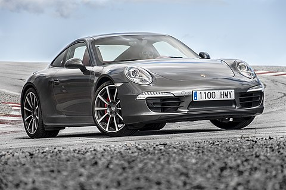
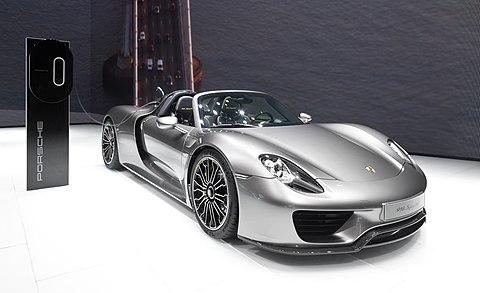
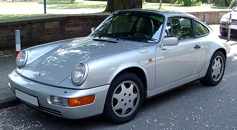
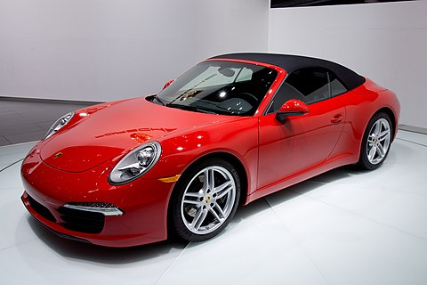
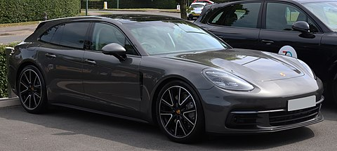
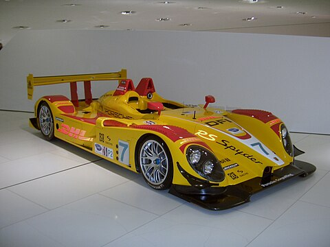

Historia
A marca alemã Porsche foi fundada em 1931 por Ferdinand Porsche
e o seu filho Ferry Porsche. Ferdinand Porsche já era conhecido
antes de fundar a Porsche, ele havia trabalhado para outras marcas.
Havia também lançado em 1900 o primeiro automóvel híbrido.
Em 1934 Ferdinand Porsche, depois de lhe ser solicitado a criação de um automóvel
acessível a todos os alemães, criou o Volkswagen Fusca. O Fusca serviu de base
mecânica ao Type 64 criado em 1939 e ao Porsche 356 produzido em 1948, sendo este
o primeiro Porsche a ser produzido. O Porsche 356 recorria em grande parte às peças
utilizadas no Volkswagen Fusca, tais como motorização traseira com refrigeração a ar.
Mais tarde o 356 viria a ser totalmente construído a partir de peças Porsche.
A utilização de um motor com refrigeração a ar e localização traseira foi desde o início,
a principal característica da Porsche. Em 1951 Ferdinand Porsche morre devido a complicações
de um enfarte, nesse mesmo ano a Porsche vence a classe nas 24h de Le Mans com o Porsche 356
SL, conseguindo assim notoriedade internacional.
Em 1953 a Porsche lança o 550 Spyder, modelo responsável por um grande número de
vitórias na competição automóvel. Este modelo tinha como principal característica,
possuir quatro árvores de cames ao invés de uma central.
Em 1964 é lançado o ícone da Porsche, o Porsche 911. Este modelo foi lançado
inicialmente com o nome de 901, mas devido aos direitos comerciais adquiridos
pela Peugeot, teve que alterar o nome. O Porsche 911 possuía um motor de 6
cilindros com localização traseira. Este modelo causou problemas internos na
Porsche, pois as linhas da autoria de Ferry Porsche não agradavam a todos.
Em 1966 entra em produção o Porsche 911 Targa, aquele que foi considerado o cabriolet seguro,
devido ao seu tecto rebatível em vidro. Em 1969 é lançado o VW-Porsche 914, um desportivo
de motorização média feito em coligação com a Volkswagen. Em 1972 devido à falta de apoio
dos restantes membros da direcção, Ferry Porsche e a sua irmã Louise Piëch decidem passar
a Porsche para empresa pública. Para isso entregaram a direcção da empresa a pessoas fora
do círculo familiar, mantendo-se os membros da família a supervisionar. Em 1974 é lançado
o potente Porsche 911 Turbo e até aos inícios dos anos 80 são lançados os modelos 924, 928
e 944. Os novos modelos foram os primeiros automóveis da Porsche a possuir motor com localização
frontal.
Em 1988 é lançado o Porsche 911 Carrera 4, com tracção integral. Em 1991 a Porsche passa a introduzir de
série na produção, airbag frontal para o condutor e passageiro. Em 1992 quando se pensava que a Porsche
estava pronta a ser comprada por um grande grupo, chega à presidência da Porsche o Dr. Wendelin
Wiedeking
. A Porsche passa então a aumentar as suas receitas financeiras. Em 1995 a Porsche lança o EBD II, um
sistema
de controlo de emissões de dióxido de carbono. Este modelo foi incorporado no Porsche 911 Turbo,
passando a
ser o automóvel de produção com o nível mais baixo de emissões de CO2. Nesse mesmo ano é lançado o 911
GT2,
até então o Porsche mais potente construído para estrada, sendo este modelo criado com edição limitada.
Em 1996 é lançado o Porsche Boxster, com um projeto totalmente novo: um roadster de motor central, e
dois lugares.
Em 1997 é lançada a nova geração do 911 Carrera, não muito diferente das outras gerações. Este modelo
passa a incorporar
o primeiro motor produzido pela Porsche com refrigeração a água, até então a Porsche utilizava a
refrigeração a ar, que
fora os Porsche só era utilizada pela Kombi, uma herança do motor baseado no Fusca, que era utilizado
desde os primeiros
Porsche construídos. Em 1998 Ferry Porsche morre com a idade de 88 anos. Em 1999 são lançados o Porsche
911 GT3 e o Boxster
S. Nesse mesmo ano a Porsche apresenta os discos de travão cerâmicos.
Eles são introduzidos de série na nova geração do Porsche 911 GT2 construído em 2001.
O Grupo Volkswagen tornou-se o principal acionista da Porsche e a Porsche o maior acionista do Grupo
Volkswagen.
Isso causou uma grande revolução na Porsche que passou a compartilhar muitas peças com modelos
Volkswagen para
reduzir custos, Porsche Cayenne e VW Touareg compartilham câmbio, plataforma, algumas opções de
motorização e até
mesmo o design de ambas são muito semelhantes. Uma curiosidade, o local da ignição dos carros da Porsche
localiza-se
no lado esquerdo do volante.
Essa tradição vem do mundo do automobilismo, notadamente as 24 horas de Le Mans, uma vez
que antigamente antes, e ao sinal de partida, os pilotos tinham de correr do lado oposto da referida
reta, atravessar a
pista, entrar nos seus bólidos, que os aguardavam com o motor desligado, acionar a ignição e partir rumo
à maratona de
24 horas. Por esse motivo a Porsche adotou a chave de ignição do lado esquerdo do volante, para que os
pilotos
pudessem dar partida no carro com uma mão e passar a marcha com a outra, estando assim pronto para
arrancar. Isso garantia
segundos preciosos e era fundamental para conquistar boas posições na corrida. Devido seu DNA esportivo,
a Porsche passou a adotar a ignição na esquerda também nos carros de produção em série e hoje todos eles
vêm com essa configuração.
Produção e Vendas
A sede e a fábrica principal estão localizadas em Zuffenhausen, uma área de Stuttgart, mas os modelos
Cayenne e Panamera são fabricados
em Leipzig, Alemanha, e partes para o SUV também são assembladas na fábrica do Volkswagen Touareg em
Bratislava, Eslováquia.
a produção dos modelos Boxster e Cayman foi produzida externamente na fábrica da Valmet Automotive na
Finlândia de 1997 a 2011
, e em 2012 a produção regressou à Alemanha.
Em 2008, Porsche reportou ter vendido um total de 98 652 carros, 13 524 (13,7%) foram vendas domésticas
na Alemanha, e 85 128 (86,3%)
internacionais. A companhia tem tido bastante sucesso nos tempos recentes, e afirma que tem a maior
margem de lucro por cada carro vendido
quer qualquer outra marca no mundo. Tabela de receitas(em milhões de euros) e número de carros
produzidos. Valores de 2008/9 em diante
não foram relatados pela Porsche SE.
Brasão
O desenho de Reimspieß foi escolhido após uma tentativa falha da Porsche de criar um concurso para
escolher seu logo em 1951.
O desenhista austríaco usou elementos da cultura local para criar seu brasão. O cavalo é o símbolo da
cidade de Stuttgart,
sede da empresa, enquanto as cores preta e vermelha e os chifres de veado são símbolos do antigo estado
alemão de
Württemberg-Hohenzollern, anexado em 1952 ao recé-criado estado de Baden-Württemberg, que existe até
hoje e tem como capital Stuttgart.
Porém, até 1954 o brasão aparecia somente nos volantes, sendo introduzido na ponta do capô pela primeira
vez no 356 Speedster.
Em 1954 ele recebeu sua primeira alteração e de lá pra cá foram outras quatro: em 1963, 1973, 1994 e
2008. Todos estão disponíveis
para modelos atuais ou clássicos dentro da linha de peças originais pela Porsche Classic.

Porsche 911 Carrera | Potência: 385 HP

Porsche 918 Spyder | Potência: 887 HP

Porsche 964 | Potência: 360 HP

Porsche 991 | Potência: 650 HP

Porsche Panamera | Potência: 560 HP

Porsche RS Spyder | Potência: 503 HP

Porsche Cayenne | Potência: 474 HP

Porsche 928 | Potência: 345 HP

Porsche Macan | Potência: 265 HP